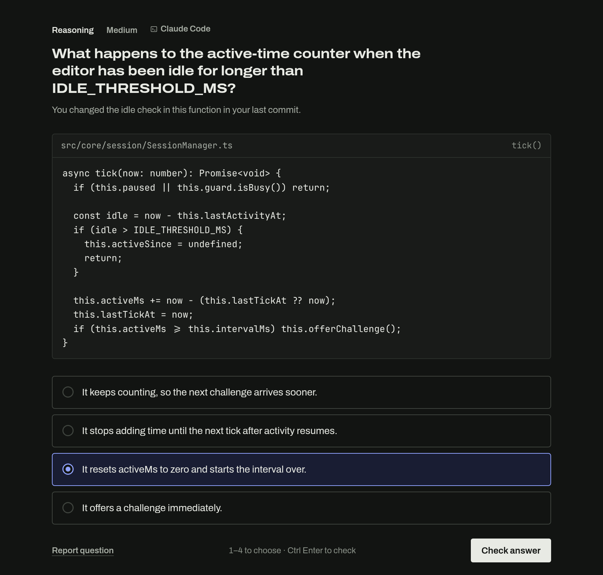
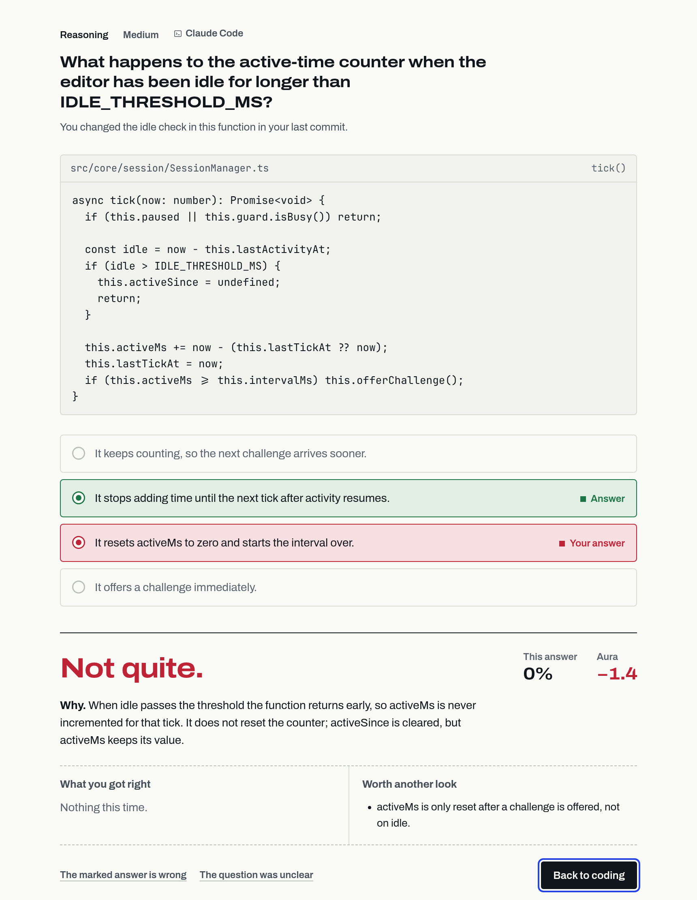
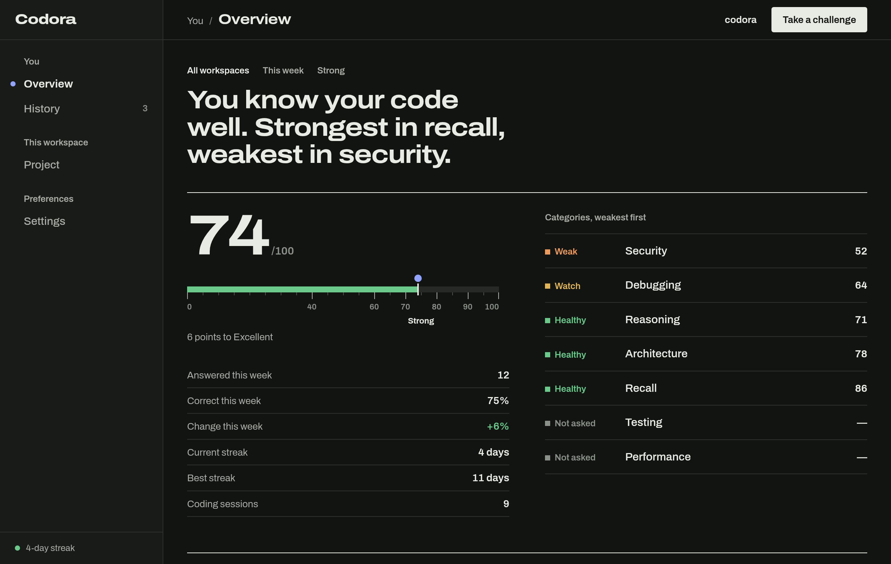

Know the code you ship.
Codora asks you one short question about code you just changed, so code an AI wrote never becomes code nobody understands.
AI is allowed. Not understanding your code isn't.
Uses Claude Code or Copilot if you already have them. No account.

Why now
AI writes more of our code every month. Understanding hasn't kept up.
In a 2026 Anthropic study, developers who learned a new library with AI help scored about 17 points lower on a comprehension quiz than those who coded by hand. The biggest drop was in debugging. The gap between the code a team ships and the code its people can explain now has a name: comprehension debt.
Sources: coverage of the Anthropic study · Addy Osmani, "Comprehension debt"
How it works
About 30 seconds, every half hour of active coding. You choose how often.
-
1
You code as usual, with or without AI
Codora counts active coding time and stays quiet while you're debugging, running tests or in the middle of a git operation.
-
2
It asks about code you just changed
One question from your recent git changes: what a function returns, why a guard is there, what breaks if a line goes. The code is shown with it.
-
3
You answer, and see why
Pick an answer or write two lines. You get the right answer, the reasoning, and what's worth another look.
-
4
Your aura shows what you really know
A 0–100 reading of how well you understand your own code, by category and by project. Weeks later, the same code comes back as a review.
Questions you can trust
A quiz is only worth taking if its answer key is right.
-
Checked
Every answer key is checked before you see it
A model answers each question again without the key, with the options shuffled, and a second model is used if you have one. If it disagrees or finds the question ambiguous, the question is thrown away.
-
Reportable
Report a bad question in one click
Wrong, unclear, or not about your code. A reported answer is taken back out of your scores, and Codora stops asking about that code.
-
Spaced
It checks what you still remember
Code you were asked about returns 7, 21 and 60 days later, or 3 days after a miss, so your aura reflects what you still understand, not just today's diff.
In your editor
Follows your VS Code theme, light or dark.


Private by default
Your code is the subject, so this matters.
- Scores, answers and history stay on your machine. There's no account and no Codora server for your code.
- To write a question, Codora sends one short snippet of recent code, a single function, to the model you chose. Never your whole repository.
- API keys go in VS Code's secret storage, never in settings or logs.
Anonymous usage counts are opt-in, off by default, and also off whenever VS Code's telemetry is off. They contain only event names with yes/no and rounded-number fields, such as "a question was answered, correct, in under a minute". Never code, file names, questions or answers. Read the full list.